Beckhoff Service Tool¶
Beckhoff Service Tool (BST) là một chương trình sao lưu và phục hồi dữ liệu đồ họa dễ sử dụng dành cho hệ điều hành Windows.
Nó có thể được sử dụng để tạo bản sao lưu hoàn chỉnh dữ liệu hệ thống và các cấu hình liên quan.
Nếu có bất kỳ sự cố nào xảy ra với hệ thống, dữ liệu có thể được khôi phục nhanh chóng và dễ dàng từ các bản sao lưu. Nhờ đó, thời gian ngừng hoạt động và chi phí phục hồi tốn kém có thể được giảm thiểu đáng kể.
Cảnh báo
Beckhoff Service Tool (BST) hiện tại chỉ được sử dụng với hệ điều hành Windows 7/10/11
Lựa chọn phiên bản BST¶
Trước khi sử dụng BST, bạn nên kiểm tra và điều chỉnh phiên bản của nó. 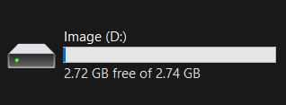
Để kiểm tra phiên bản, bạn cần cắm BST vào laptop. Sau khi kết nối, BST sẽ xuất hiện dưới dạng một ổ đĩa mới có tên là Image:
{kind=link}
Tiếp theo, chúng ta tìm tệp có thông tin phiên bản: 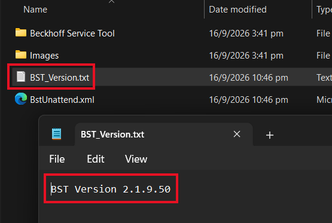
{kind=link}
Phiên bản BST cần được điều chỉnh phù hợp với loại IPC mà chúng ta sẽ sử dụng BST:
| BST 2.1.9.xx | BST 2.0.9.xx | BST 2.0.8.xx | |
|---|---|---|---|
| IPC Motherboard hỗ trợ | CBxx55, CBxx56, CB1061, CB3060, CBxx63, CBxx64, CBxx67, CBxx68, CBxx71, CBxx72, CBxx73, CBxx76, CBxx83 | CBxx51, CBxx52, CB3053, CB3054 | CBxx50 |
| Embedded PC (EPC) hỗ trợ | CX51xx, CX52xx, CX53xx, CX56xx, CX20x0, CX20x2, CX20x3 | CX50xx | CX1020, CX1030 |
| Server công nghiệp hỗ trợ | C6670 |
Thay đổi phiên bản BST¶
Nếu cần they đổi phiên bản BST, bạn có thể thực hiện bằng công cụ ApplyBST. Công cụ này được tải xuống cùng với phiên bản tương ứng của BST, tải xuống tại đây hoặc từ website sản phẩm Beckhoff Service Tool
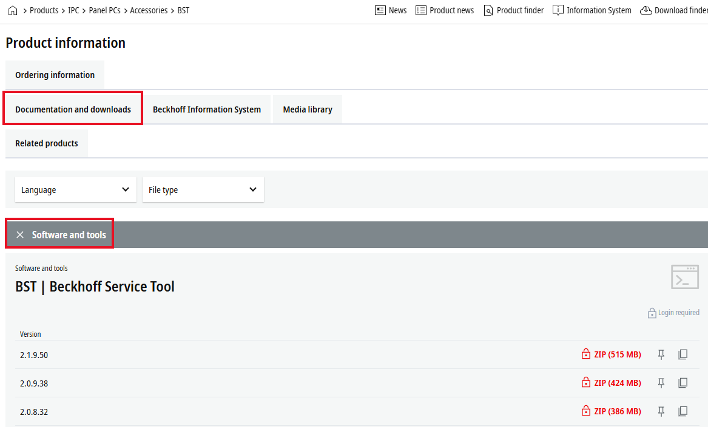
{kind=link}
Sau khi giải nén tệp đã tải về, chạy ứng dụng ApplyBST.exe (yêu cầu BST đã được cắm vào laptop): 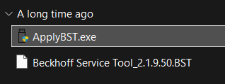
{kind=link}
Khi mở ứng dụng, bạn sẽ thấy cửa sổ sau:
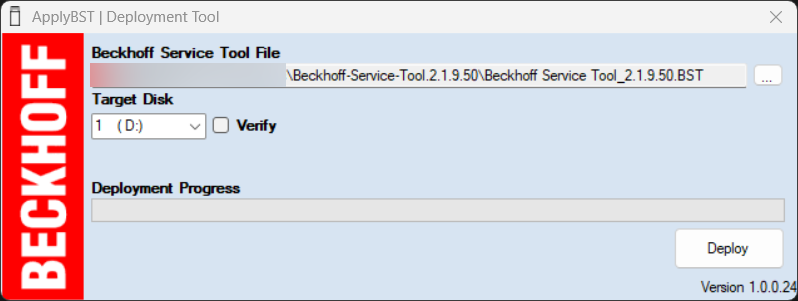
Lúc này, đường dẫn đến tệp BST đã được tự động chọn cùng với thư mục (bạn có thể chọn đường dẫn đến tệp BST phiên bản khác), và ổ USB BST (trong trường hợp này là Disk D). Sau đó nhấn Deploy.
{kind=link}
Bạn có thể thấy một cửa sổ: 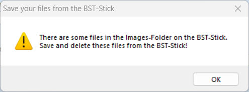
Trong trường hợp này, bạn cần xóa tất cả file có trong thư mục Images nằm trên BST (thư mục này chứa các bản sao lưu bạn đã thực hiện trước đó). Vì vậy chúng tôi khuyên bạn nên chuyển các file này sang vị trí khác ngoài BST.
{kind=link}
Một cửa sổ khác xuất hiện: 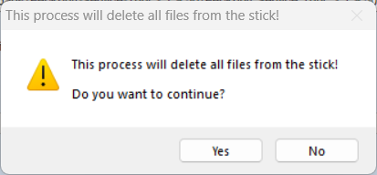 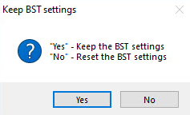
Đây là thông tin để xóa tất cả các tệp khỏi ổ đĩa sau khi quá trình hoàn tất, bạn cần xác nhận để tiếp tục.
Nếu đã có phiên bản BST trước đó, bạn có thể được yêu cầu lưu hoặc ghi đè các Setting.
{kind=link}
{kind=link}
Sau khi thanh Deployment Progress là 100%, bạn có thể đóng cửa sổ ApplyBST. 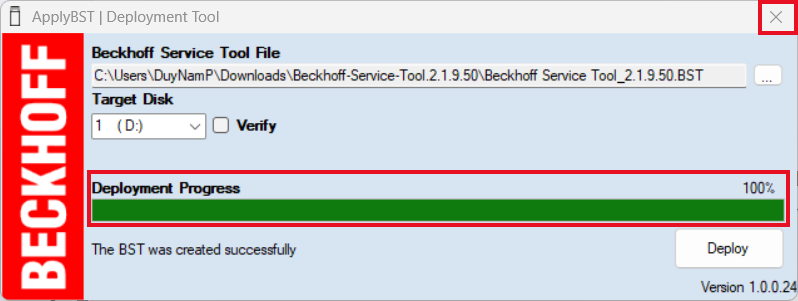
{kind=link}
Sử dụng BST¶
Yêu cầu trước khi sử dụng¶
Yêu cầu:
- USB BST phải được kết nối trực tiếp với IPC mà không thông qua hub USB hay cáp USB kéo dài nào.
- USB BST phải là thiết bị khởi động đầu tiên trong BIOS
- Phiên bản của BST phải phù hợp với IPC đang sử dụng. Xem chi tiết tại Lựa chọn phiên bản BST.
IPC phải khởi động từ USB BST để bắt đầu sử dụng BST. Hãy kiểm tra thứ tự khởi động trong BIOS Nếu BST không khởi động, điều này có nghĩa là thứ tự khởi động đã bị thay đổi hoặc bạn không dùng đúng phiên bản BST cho IPC đang sử dụng.
Khởi động BST¶
Để khởi động BST, bạn cần khởi động IPC với BST (điều này yêu cầu tạm thời gián đoạn hoạt động bình thường của máy và IPC). Điều này có thể được thực hiện bằng hai cách:
- Cắm BST vào IPC khi nó đang hoạt động, sau đó khởi động lại hệ thống.
- Tắt hệ thống một cách an toàn và ngắt nguồn điện của IPC ⇒ cắm BST ⇒ cấp nguồn.
Giao diện của BST sẽ xuất hiện khi khởi động đúng:
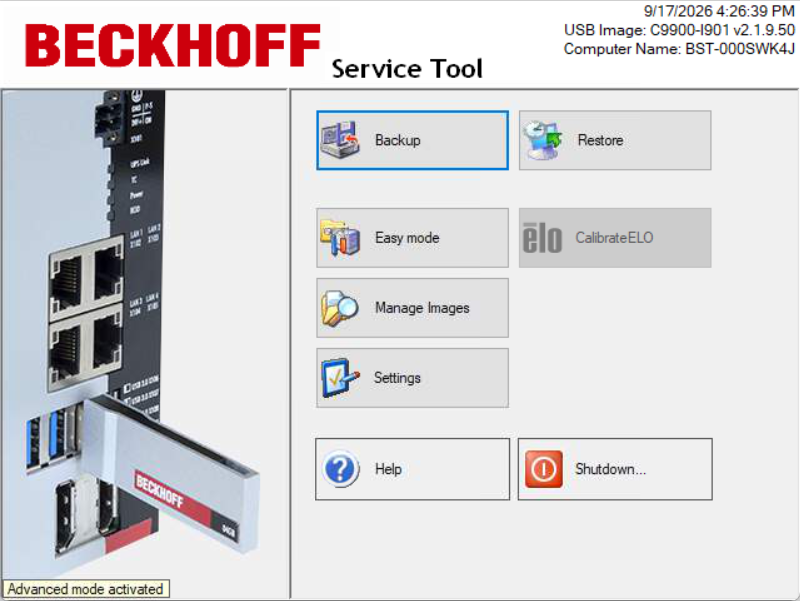
{kind=link}
Thao tác với BST
Để thao tác với BST, bạn cần có màn hình và chuột kết nối với IPC, hoặc bạn có thể sử dụng truy cập từ xa bằng ứng dụng TightVNC Viewer (xem thêm tại đây)
Sao lưu¶
Bạn có thể lưu file sao lưu (gọi là Image - file ảnh) trên USB BST hoặc trên ổ đĩa ngoài.
Yêu cầu khi sao lưu
USB BST hoặc ổ đĩa lưu trữ file sao lưu phải còn đủ dung lượng
Truy cập Beckhoff Service Tool từ xa¶
Trường hợp sử dụng
Cách này có thể được sử dụng khi IPC không thể kết nối tới màn hình và bàn phím rời.
Chỉ cần cài đặt một lần duy nhất, BST sẽ lưu cấu hình cài đặt VNC
Bước 1: Kích hoạt VNC Server¶
Cách 1: Kích hoạt thông qua tệp cấu hình (trước khi khởi động BST)¶
-
Kết nối USB BST vào máy tính.
-
Mở và chỉnh sửa file "Beckhoff Service Tool\Settings.xml":
Thêm hoặc cập nhật đoạn mã sau vào file cấu hình:
-
Sau khi lưu các thay đổi trên, bạn đã có thể truy cập điều khiển từ xa vào BST qua giao thức VNC với thông tin sau:
- Mật khẩu:
1 - Tên VNC Server =
BST-<BTN>
Lưu ý: Bạn hoàn toàn có thể đổi lại mật khẩu này sau khi BST đã khởi động thành công vào giao diện chính.
- Mật khẩu:
{kind=link}
Cách 2: Kích hoạt sau khi đã khởi động BST¶
Phương pháp này yêu cầu kết nối (ít nhất một lần), màn hình với IPC mà chúng ta đang khởi động BST. Sau khi khởi động BST, chọn tùy chọn Settings trên màn hình bắt đầu:
{kind=link}
Sau đó chúng ta vào phần cài đặt General và thay đổi thiết lập TighVNC thành Enable, hãy cài đặt mật khẩu bằng tại đây. Nhấn Ok để hoàn tất cài đặt:
{kind=link}
Bước 2: Truy cập từ xa¶
Nếu BST đã được kết nối với IPC và khởi động đúng cách (chờ khoảng 5 phút), nhưng bạn không có màn hình, bạn có thể kết nối từ xa với BST bằng ứng dụng TightVNC Viewer.
Để làm điều này, chúng ta cần phần mềm: TightVNC Viewer.
Sau khi cài đặt và chạy ứng dụng, một cửa sổ sẽ xuất hiện:
{kind=link}
Thay thế Remote Host bằng tên VNC Server hoặc địa chỉ IP của VNC Server:
-
Tìm tên VNC Server Tên VNC Server sẽ là:
BST-<BTN>Dựa theo nameplate của IPC, chúng ta có thể xác định được giá trịBTN.Ví dụ, ta có nameplate sau:
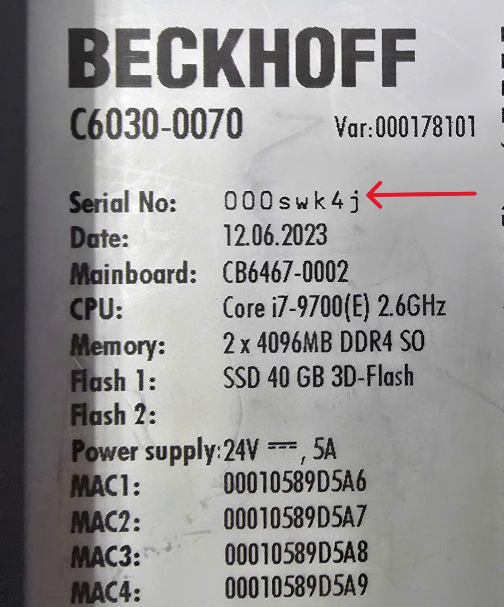
⇒ Giá trị
BTNlà 000SWK4J
⇒ Tên VNC Server là BST-000SWK4J
-
Tim địa chỉ IP của VNC Server:
-
Tìm IP từ tên VNC Server:
Ví dụ: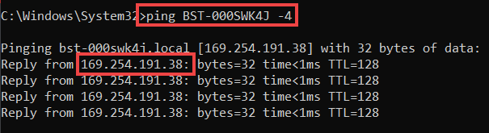
-
Tìm IP bằng các phần mềm dò IP như là Wireshark, Advanced IP Scanner
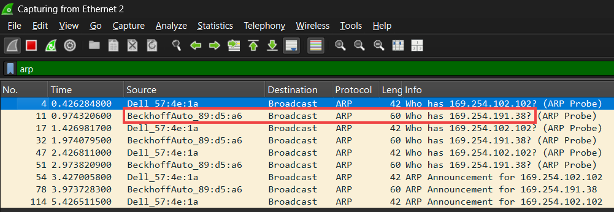
-
{kind=link}
{kind=link}
{kind=link}